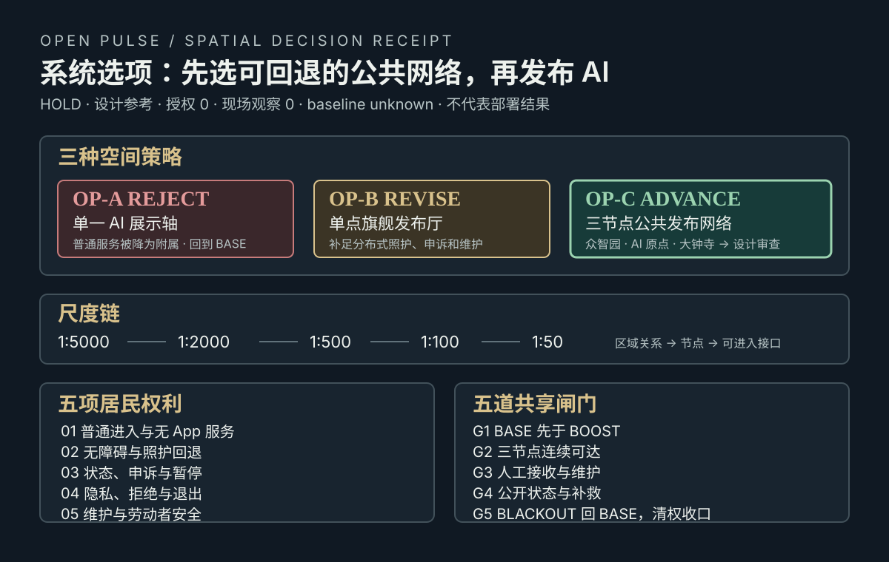
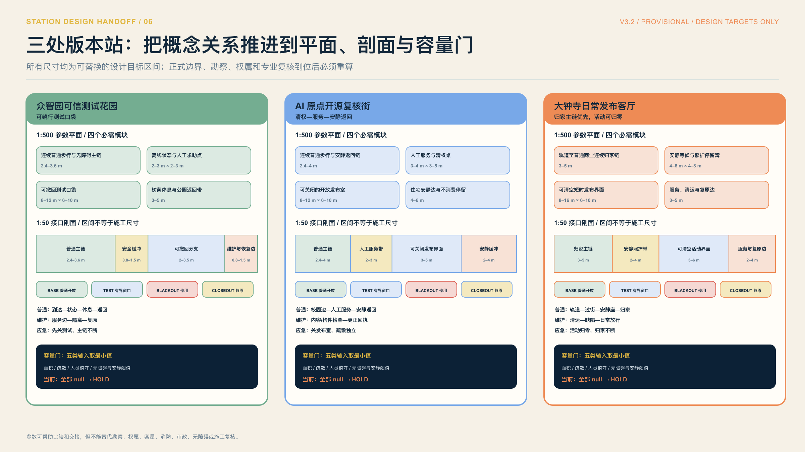
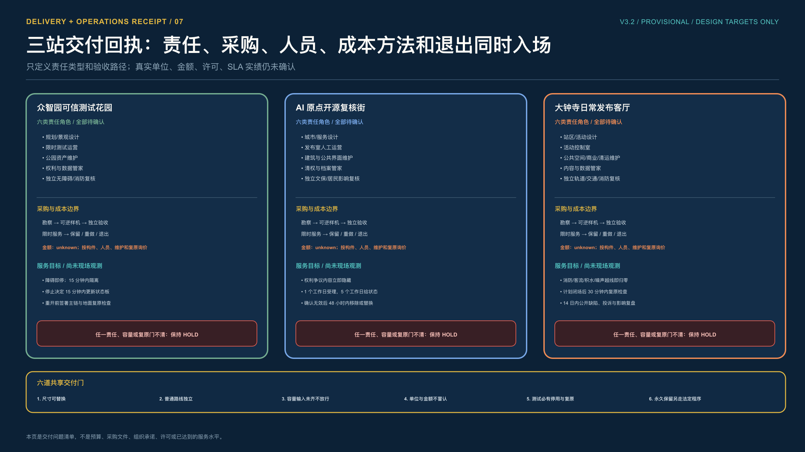

城市不追随模型版本，
城市发布自己的公共版本。
京张开源脉冲把 AI 项目改造成一套可停、可修、可退出的城市发布制度。先公开问题，再限定试验，证据过闸后才发布；普通服务始终保留。

一次公共发布，六道不能跳过的门
模型可以每天更新，公共空间不能每天试错。每个版本必须留下问题、边界、证据、人工裁决、公开回执和退出路径，任何未知项都不能被平均分掩盖。
系统选项先于 AI 发布
三种空间策略同图比较：OP-A 直接拒绝，OP-B 先修订，只有 OP-C 三节点公共发布网络进入设计审查。尺度链从 1:5000 到 1:50，五项权利和五道共享闸门共同决定是否回到 BASE。

三座站，各自完成一次日常验收
每座站承担一种公共版本能力。众智园把风险留在可绕行测试口袋，AI 原点让来源、贡献、撤回和人工服务同街可见，大钟寺用居民归家路线检验活动能否安全归零。




技术路线和人的路线，用同一张图验收
交通慢行、蓝绿公共空间、建筑与更新项目共同承载版本测试。AI 只占一条可撤回的支线，断网或停止试验时，人的路线不消失。


当前证据边界
已知 本包 GeoJSON 可复算出范围、绿地、公共空间和概念网络；S-02 本地合成桌面回放通过 6/6 合同检查。
未知 正式边界、权属与许可、现场人流和无障碍基线、微气候、排水、真实机器人表现及居民同意。
当前决定 现场窗口 HOLD，公共发布未签发；这些未知项补齐并经专业人员与公众代表复核前，不扩大试验。
任务覆盖 总览地图 · 三层范围 · 重点区域 · 用地分区 · 交通慢行 · 蓝绿公共空间 · 建筑 · 更新项目 · AI 场景 · 核心指标 · 自检状态 · 来源 · 假设
方法来源包括 NIST AI RMF 的全生命周期治理、英国 ATRS 的公共算法透明记录，以及城市生活实验室长期嵌入与知识共享研究。这里只采用治理机制，不把外部案例绩效转移为京张本地结论。页面完全离线，无远程运行资源。